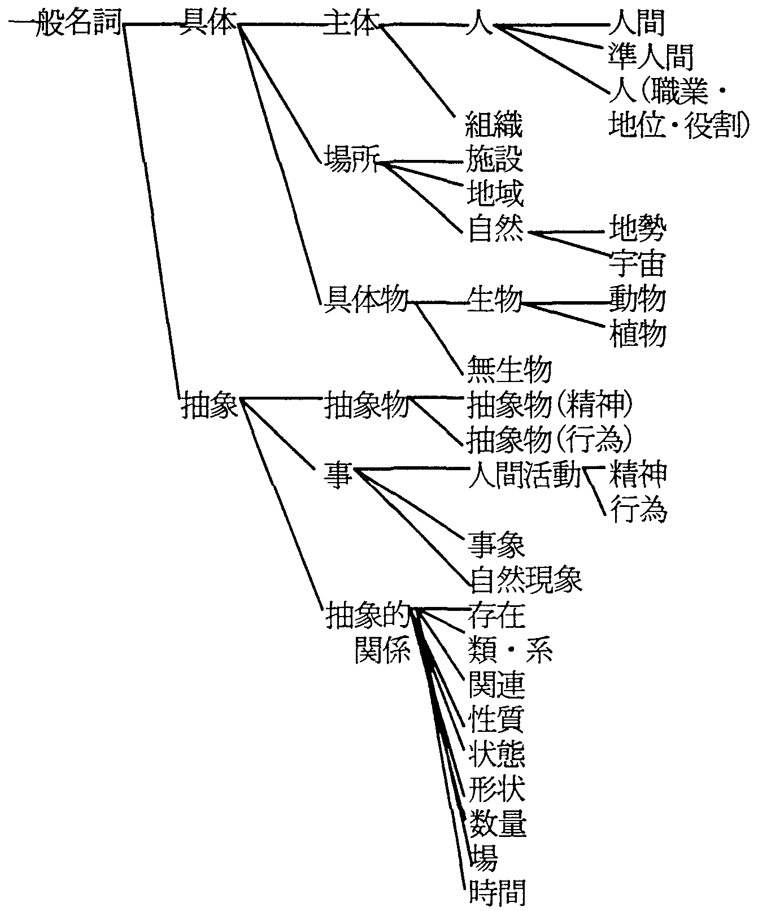
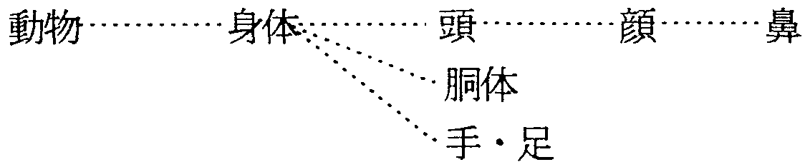
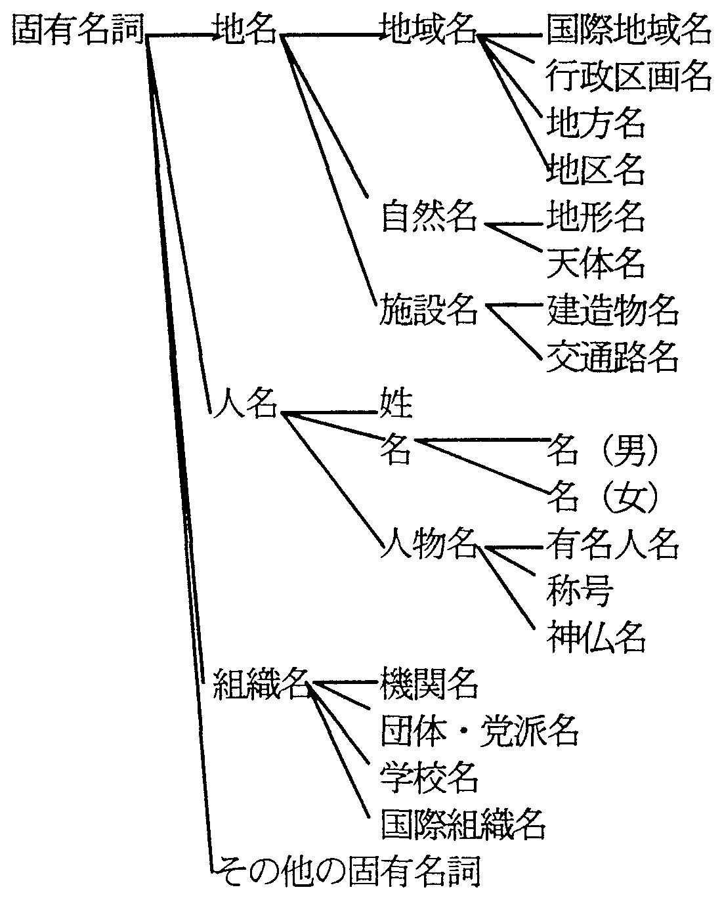
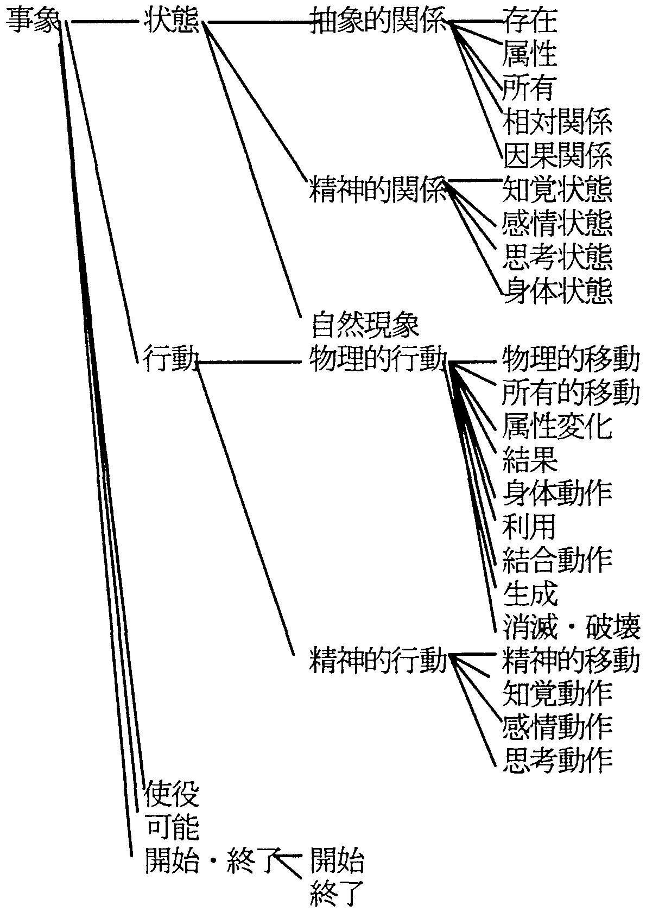
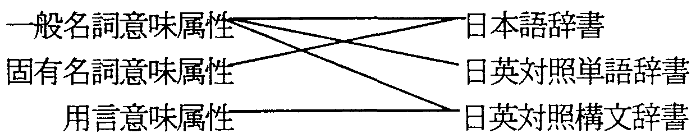
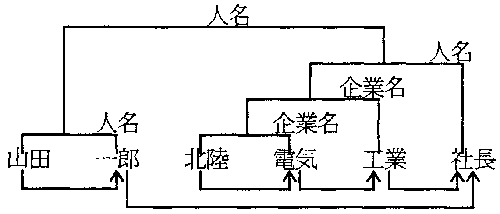

我々が日英機械翻訳のために開発したシソーラスである意味属性体系について紹介する。 意味属性体系は、概念化された対象と単語との対応関係を、対象の見方、 捉え方に着目して分類したものである。 上位/下位関係、全体/部分関係による階層構造を持った名詞の概念を分類した 一般名詞意味属性体系と、固有名詞に関してさらに詳細に分類した固有名詞意味属性体系と、 用言の持つ意味とそれが文中で使われた時の働きに着目して分類した用言意味属性体系の 3種類からなる。 それらが、解析用の日本語辞書や、日本語と英語の対応を示す日英対照単語辞書、 日英対照構文辞書なと機械翻訳用の辞書で、どのように記述されているかについて述べる。
また、実際に、日英機械翻訳の(1)訳語選択処理、(2)複合語解析、 (3)主語や目的語の補完処理などの文脈処理、 (4)そのまま翻訳すると不自然な英語になってしまう日本語に特徴的な表現を 自然な英語に翻訳するための日本語書き替え処理や (5)広域変換処理などにどのように利用されるかについて示す。
機械翻訳、シソーラス、辞書、日本語、英語
We introduce our thesaurus, the semantic attribute system, which we have developed for Japanese-to-English machine translatIon. The thesaurus is composed ofthree semantic attribute systems, a common noun semantic attribute system which classifies noun concepts in a hierarchy of "is-a" and "has-a" re1ationships, a proper noun semantic attribute system winch classifies proper noun concepts in more detail, and a verbal semantic attribute system which classifies concepts of predicates, focusing on the meanings of predicates and their functions in languages. We describe how information from these semantic attribute systems is used in the Japanese semantic word dictionary, Japanese-to-English word transfer dictionary and Japanese-to-English structure transfer dictionary.
We showed how these information is used in: (1) sense disambiguation; (2) analysis of compound words, (3) context processing like supplementation of ellipsed subjects and objects, (4) automatic rewriting of Japanese expressions peculiar to Japanese into easily translated Japanese expressions; and (5) translating whole structures using direct parse tree transfer.
Machine translation, Thesaurus, Dictionary, Japanese, English
ネットワーク時代を迎え、近年、WWW(world wide web)などを通じて 世界中から様々な情報を入手できるようになって来ている。 それらの情報はいろいろな言語で記述されているため、 機械翻訳の需要はますます高まってきている。 翻訳品質が良くかつ実用的な機械翻訳システムを実現するためには、 高度な意味解析が必要である。 意味解析を行う上で、 一番の基本的に必要になることは単語の意味を適切に辞書[1]上に表現することである。 シソーラスは単語の意味の類似性を表現する上で非常に重要なものであり、 高度な意味処理を行うためには大規模で詳細なシソーラスが必要である[2]。
本論文では、機械翻訳とシソーラスの関係を、 我々が日英機械翻訳[9,13]のために開発したシソーラスである意味属性体系を例に、 明らかにしたいと思う。 まず、2章で意味属性体系とはどういうものであるかを示し、 3章でそれに基づく意味情報が、解析用の日本語辞書や、 日本語を英語に変換する変換処理で使用する日本語と英語の単語の対応を表す日英対照単語辞書、 日英対照構文辞書など機械翻訳用の辞書で、どのように記述されているかについて述べる。 4章で、実際に、日英機械翻訳の(1)訳語選択処理、(2)複合語解析、 (3)主語や目的語の補完処理などの文脈処理、 (4)そのまま翻訳すると不自然な英語になってしまう日本語に特徴的な表現を 自然な英語に翻訳するための日本語書き替え処理や (5)言語の表現習慣の違いにより大きく構造が変化させる必要がある場合を処理するための 広域変換処理などに、意味属性がどのように利用されるかについて示す。
意味属性体系は、概念化された対象と単語との対応関係を、対象の見方、 捉え方に着目して分類したものであり、単語の意味的な用法を表現したものである。 例えば、「学校」という単語は、「特定の場所」を指す場合もあるし、 「機関」や「組織」としての側面が取り上げられたりする。 「私は学校へ行く。」の場合は、 「特定の場所」としての「学校」の意味的な用法であるのに対し、 「学校は給食を止めた。」の場合は、「機関」や「組織」としての「学校」の意味的な用法である。
意味属性体系は、 上位/下位関係、全体/部分関係により階層化された名詞の概念を分類した一般名詞意味属性体系と、 固有名詞に関してさらに詳細に分類した固有名詞意味属性体系と、 用言の持つ意味とそれが文中で使われた時の働きに着目して分類した用言意味属性体系の 3種類からなる。 意味属性体系は階層構造を持った木構造で表現される。 意味属性名は概念化の視点を表すのに適切と思われる単語を用いて表現するが、 一つの意味属性は一義であり、多義性は持たせない。
一般意味属性体系は、名詞の概念を上位/下位関係(is-a関係)と 全体/部分関係(has-a関係)に着目して、分類したものである(図1)。 意味属性数は2,710で、最大段数は12段である。 意味属性間の関係が上位/下位の関係であるか、 全体/部分の関係であるかは明確に区別できるようになっている。 (図1の例は、すべて上位/下位関係である。上位/下位関係は実線で示す。)
|
 |
全体/部分関係の例としては以下のようなものを挙げる事ができる(図2)。
|
 |
一般名詞意味属性体系は、 主に動詞とその主語や目的語となる名詞句との共起条件を記述するために使用される。 そのため、固有名詞にも一般名詞意味属性を付与している。 (全体/部分関係は点線で示す。) また、用言など名詞以外に対しても、 それが名詞化された場合に対応した意味属性が一般名詞意味属性体系に基づいて付与している。 接辞では、例えば、接辞「〜花」のように、 それが接続した結果としての複合名詞の意味用法が記述される。
固有名詞意味属性体系は、意味属性数が130で、最大段数は9段である(図3)。 固有名詞は、種類も多様で語数も多いので固有名詞を含む複合名詞を解析するためには、 一般名詞意味属性よりも、より細かい意味属性の分解能が必要となるため、 一般名詞意味属性をさらに細分化したものとなっている。 例えば、一般名詞意味属性「行政区画」は固有名詞意味属性では、 「日本」、「国名」、「外国」に細分され、「日本」はさらに「都道府県」、「市庁・郡」、 「字名」に、「都道府県」はさらに「都」、「道」「府」、「県」などに細分してある。
|
 |
接辞は、一般名詞意味属性体系と同様に、 それが接続した結果としての複合固有名詞の意味用法が記述されることになる。
用言意味属性体系[5,11]は、意味属性数約100で、最大段数は5段である(図4)。
|
 |
用言意味属性体系は動詞や形容詞の意味的な用法を分類したものであり、 主に、用言と用言の意味関係を解析する手段として使う。 用言意味属性体系は、用言が持つ動的属性および静的属性の種類だけではなく、 用言の格に対する関係も考慮して細分化してある。 例えば、「完成する」、「開発する」は共に「生成」の行為を表す用言であるが、 「完成する」は「N1を生成する」のに対し、「開発する」は「N1がN2を生成する」ことを示し、 用言の持つ格に違いがあるのでこれを区別している。
各辞書で、どの意味属性が付与されているかを、図5に示す。
|
 |
一般名詞意味属性は、日本語辞書、日英対照単語辞書、日英対照構文辞書の全てに付与されている。 日本語辞書では、単語の多義を考慮し、多義語には複数の意味属性を付与する。 多義でない場合でも、意味的用法が複数ある場合には、複数の意味属性を付与する。 日英対照辞書のエントリは一つの語義に対応しており、 一般名詞意味属性はその語義の一面を表現することになる。 日英対照構文辞書では、用言と名詞句の共起条件を表現するために記述される。 固有名詞意味属性は、日本語辞書の固有名詞と、固有名詞承接型の接尾辞に付与される。 用言意味属性は、日英対照構文辞書のエントリの意味的な用法を表現するために記述する。
日本語辞書の情報が一般名詞意味属性や固有名詞意味属性でどのように記述されているかを、 「花」という単語を例に取って、表1に示す。
| 表記 | よみ | 品詞 | 一般名詞意味属性 | 固有名詞意味属性 |
| 花 | はな | 一般名詞 | 花、諸芸、興隆 | |
| 花 | はな | 体言型接辞 | 花 | |
| 花 | はな | 固有名詞 | 行政区画、女 | 大字(その他)、名(女) |
「花」には、3つ品詞(一般名詞、体言型接辞、固有名詞)があり、 日本語辞書では、それぞれが一つのエントリとなっている。 一般名詞の「花」では、3つの意味属性がついているが、 この場合は、この単語の多義を表している。 固有名詞の「花」では、一般名詞意味属性と固有名阿意味属性ともに、 2つの意味属性がついているが、これも、この単語の多義を表している。 一つは「花」という「大字」の地名であり、もう一つは、「花」という「女性の人の名前」である。 固有名詞意味属性は、「大字」といったように 一般名詞意味属性で示される「行政区画」よりも極めの細かい分類で示される。
日英対照単語辞書の情報が一般名詞意味属性でどのように記述されているかを、 これも「花」という単語を例に取って、表2に示す。
| 品詞 | 優先度 | 訳語 | 訳語選択条件 | |
| 単語意味条件 | 修飾単語条件 | |||
| 一般名詞 | 1 | flower | 花 | 樹木以外 |
| 一般名詞 | 2 | best days | 興隆 | |
| 一般名詞 | 3 | blossom | 花 | 果樹 |
| 一般名詞 | 4 | flower arrangement | 諸芸 | |
| 固有名詞 | 1 | Hana | 行政区画、女 | |
一般名詞の「花」に対して4つのエントリが用意されている。 「花」という意味属性に対応する訳として、“flower”と“blossom”があるが、 それが修飾語などの情報から「果樹」の花であると分かる場合は、“blossom”と訳し、 それ以外の草の花のような場合は、“flower”と訳すという条件を記述できるようになっている。 「彼は今が花である。」といった「興隆」の意味を持つ場合は、“best days”と訳す。 また、「花を習う。」のように、「諸芸」としての「花」の場合は、 “flower arrangement”と訳すことになる。
固有名詞の「花」は、地名の「行政区画」としての意味と、「女性の人の名前」の意味があるが、 訳語が同じなので、パッキングして表現している。
日英対照構文辞書の情報が、 一般名詞意味属性や用言意味属性を使用してとのように記述されているかを、 「取る」を例に取って、図6、図7に示す。
|
| ||||||||||||||||||
「取る」が「予約する」の意味で使われる場合の例は図6に示す。 このような意味で、「取る」を捉える場合は、 主語には「人」や「組織」を表す「主体」の概念がくる必要がある。 目的語には、「席」、「部屋」、「ホテル」、「券」、 「乗り物」のいずれかの概念に相当するものがくる必要がある。 また、助詞「に」を伴う名詞句には「場」や「場所」の概念がくる必要がある。 「私はホテルを京都三条に取った。」などの文は、例1の条件に適合するので、 “I reserved a hotel at Sanjo, Kyoto.”のように訳されることになる。 この場合は、用言意味属性は「思考動作」となる。
「取る」が「課金する」の意味で使われる場合の例を、図7に示す。 この場合、主語と助詞「から」もしくは「より」を伴う名詞は、「主体」の概念が必要である。 目的語には、「料金」や「金銭」の概念が必要である。 「私は使用料を彼から取った。」は、この条件に合うので、 “I charged him a royalty.”のように訳される。 この場合、用言意味属性は、「所有的移動」となる。 「取る」のようなよく使われる和語動詞は、対応する英語の訳語が多い。 「取る」に関するこのような変換ルールは、我々の機械翻訳システムでは、21個用意してある。
また、図8のような、慣用的な表現を扱うために、
条件として文字面を指定できるようになっている。
このルールを使って、「私は彼の揚げ足を取るった。」を、“I tripped him up.”
と訳すことができる。
| ||||||||||||||||||
3.4節の「取る」の例て示したように、用言の訳語の選択は、用言と名詞句の関係て決まる。 すなわち、主語、目的語など用言の格要素としてどのような文法機能をとるか、 また、その格要素がどのような概念のものを取るのかによって決まる。 用言の訳語選択では、その用言に関する複数の変換ルールと整合性のテストを行い、 整合する格要素の数や助詞との整合性とともに、その格要素になるべき概念の整合性を考慮して、 最も適合するルールが選ばれ、用言の訳語が決まる。 それと同時に、その用言の格要素となる名詞句の意味も同時に決まるので、 名詞句の訳語選択も行われる。
例えば、「私はホテルを取った。」の場合、 「取る」は「予約する」の意味で使われていることと同時に、 「ホテル」は「企業」としてのホテルではなく、 泊まる「施設」としての「ホテル」の概念としての用法てあることが、決まることになる。
副詞の訳語選択[6]は、副詞が修飾する用言の意味属性を利用して行うことができる。 例えば、「丁寧に」は“politely”、“carefully”二つの訳語の候補があるが、 訳語選択条件に意味属性を利用して、「見る」、「聞く」、 「書く」に関する動詞にかかる場合には、“carefully”、 それ以外には、“politely”を選択するように日英対照副詞辞書に記述してある。
固有名詞を含む複合名詞の解析[4]で、固有名詞意味属性がとのように利用されるかを見てみる。
例えば、
「山田一郎北陸電気工業社長」
という複合固有名詞を考えてみる。
それぞれの、固有名詞意味属性は以下のようになっている。
| 山田: | 「郡」「市」「町」「村」「大字」「姓」「駅名等」 | ||
| 一郎: | 「名(男)」 | ||
| 北陸: | 「地方名」「大学・高専」 | ||
| 電気: | 「企業名」「商店名」 | ||
| 工業: | 「企業名」 | ||
| 社長: | 「人名」 |
「山田一郎」は「姓」-「名(男)」の関係になっており、全体で「人名」になる、 「北陸電気」は、「地方名」-「企業名」の関係になっており、全体で「企業名」となる。 さらに、「企業名」となりえる「工業」と接続できて、全体で、「企業名」となる。 「企業名」の「北陸電気工業」と「人名」の「社長」が結びついて、 全体で「人名」となり、 「人名」の「山田一郎」と「人名」の「北陸電気工業社長」が同格として結び付き、 全体で「人名」となる(図9)。 どういう概念同士が結び付くかは、 固有名詞意味属性を用いた接続条件に記述することによりこのような解析を行うことができる。
|
 |
高度な翻訳を行う場合は、単文単位の翻訳を考えるだけでは、不十分であり、 文間のつながりや、照応関係などを考慮して翻訳する心要がある。 ここでは、主語や目的語の補完処理と、 名詞句の指示性処理を例に文脈処理と意味属性の関係について述べる。
日本語は、話し言葉はもちろんのこと、新聞記事のような書き言葉の文でも、 主語や目的語が省略できる。 英語ではそれは必須の要素であり、何が省略されているか機械翻訳システムが理解し、 翻訳する必要がある。
「NTTは新型交換機を導入する。自己診断機能を搭載、 20システムを設置する予定だ。」という文を例に取って、補完処理を説明する。 「NTTは新型交換機を導入する。」という文が前にある場合、 「自己診断機能を搭載」したのは「何」なのかとか、 「20システムを設置する予定」なのは「誰」なのかといったことは、 自明であるので、日本語では述べないのが自然である。 ところが、英語に翻訳する場合、これらの要素は、言語習慣として省略できない。
人間にとっては自明なこの省略も、計算機に判断させるのは、そう簡単なことではない。 我々は、図10や図11のような省略を補うためのルールを用意することにより この問題を解決している。
|
|
「NTTは新型交換機を導入する。」の用言意味属性は、「利用」である。 これは「導入する」の用言意味属性情報から得ることができる。 「自己診断機能を搭載」は、主語が省略されており、用言意味属性は「所有」であるので、 図10のルールが適用され、参照文「NTTは新型交換機を導入する。」の目的語である 「新型交換機」が省略された要素であると確定できる。 また、「20システムを設置する予定」は、主語が省略されており、 用言意味属性は「身体動作」なので、図11のルールが適用され、 参照文「NTTは新型交換機を導入する。」の主語である「NTT」が 省略された要素であると確定できる。その結果、
NTT will introduce a new model exchange.
The new model exchange is equipped with a self
checking funct ion and NTT is planing to install 20
systems.
のように省略要素を補完して翻訳を行うことができる。 「新型交換機」は既存の概念であるので、定冠詞を付けて生成している。 英語でも、省略できる場合は、いったん、補完処理で補って、 さらに英文生成で省略する処理を行う。
名詞句の指示性は、冠詞、所有代名詞、数の生成と深く関連している[7]。 ここでは、名詞句の指示性と意味属性の関係について述べる。
用言意味属性として「感情動作」や「感情状態」を持つ述語の目的語は総称的である。 例えば、「私は象が好きだ。」の「象」は総称的である。 また、一般意味属性の上位/下位関係を利用して、 総称的名詞句や帰属的名詞句であるかどうかの判定している。 「AはBだ。」の表現形式の文、例えば、「象は動物だ。」では、 「動物」と「象」は上位/下位関係になっているので、 「象」は総称的名詞句であり、「動物」は帰属的名詞句であると判定できる。
日本語書き替え処理[12]は、そのまま翻訳すると不自然な英語になってしまう 日本語に特徴的な表現を自然な英語に翻訳するための処理である。 例えば、「バスに乗って学校へ行く」の「に乗って」を「で」に書き替える事によって、 以下のように簡潔で自然な英語として翻訳することができる。
| 「バスに乗って学校へ行く。」 | |
| ⇒ 「バスで学校に行く。」 | |
| → “I go to school by bus.” |
日本語書き替えルールは図12に示すように、 日英対照構文辞書における用言と名詞句の関係を一般名詞意味属性で記述する。 この例の場合、「乗り物」に乗ってどこかへ行く場合に、「乗り物」に続く助詞を、 「で」という手段を表す助詞にかえ、「乗って」を消す (すなわち、「に乗って」を「で」に書き替える)ことによって、 英語で手段を表す前置詞“by”によって翻訳できる。
|
従来、このような書き替えは、翻訳において副作用を起こすことが多かったので、 行われていなかったが、2,710個という詳細な意味属性により、 書き替えの条件を厳密に規定することにより、 副作用による翻訳の低下はほとんど無くすことができた。
広域変換処理[10]は、日本語と英語の表現習慣の違いなどにより、 原文の日本語の構造と翻訳すべき英語の構造が 大きく変化する場合に対処できるようにした処理である。 広域変換ルールの例を図13に示す。
|
この変換ルールは、日本語の副詞を英語では形容詞に品詞変換して 翻訳しなければならないような場合を処理するためのものである。 このルールも用言に対する名詞句などの共起条件を、一般名詞意味属性を使って記述している。 例えば、
| 「私は壁を赤く塗る。」 | |
| →“I Paint a wall red.” |
と翻訳する。
「XはYがZだ。」のような表現を取る二重主格文は、いくつかの翻訳パターンがあるが、 「象は鼻が長い。」のような、XとYが全体/部分関係にある場合は、そのことを利用して、 「象は長い鼻を持っている」と捉えなおし、 “Elephans have long trunks.”と構造変換して翻訳できる。 「象」が「鼻」を持っていることは、意味属性体系を利用して、図2の全体/部分関係
「動物」→「身体」→「頭」→「顔」→「鼻」と
上位/下位関係
「動物」⊃「獣」⊃「象」
から捉えることができる。
「AのB」を、“B of A”と訳すか“A's B”と訳すかの判定にも、 一般名詞意味属性を利用している。 後者で表現できるものを、一般名詞意味属性を用いて判定している。 例えば
| 「猫のしっぽ」(「動物」の「尾」) | |
| →“cat's tail” |
と翻訳する。
所有代名詞の付与処理[8]でも、用言意味属性が使われる。 「私は時計を見た。」→“I saw my watch.”のように、 日本語では所有者を明示しない場合でも、 英語では、親類、恋人、体の一部、仕事など概念を持つ特定の英単語に対して、 所有代名詞を付けて所有者を明示する必要がある。 (所有代名詞を付与すべき概念は、一般名詞意味属性とは観点、が異なるので、 その判定には一般名詞意味属性は用いていない。) ところが、これらの概念が、用言意味属性「所有」や「所有的移動」を持つ述語と 一緒に現れる場合には、所有代名詞をつけてはいけない。 例えば、
| 「私は時計を買った。」 | |
| →“I bought a watch.” | |
| (“I bought my watch.”はだめ) |
と翻訳する必要がある。
日英機械翻訳に利用するシソーラスについて、 NTTコミュニケーション科学研究所で開発中の日英機械翻訳システムALT-J/Eを例に取り、 それがどのようなものであり、どのように辞書上で表現され、 どのような処理に利用されているかについて示した。 このようなシソーラスを使用した翻訳方式で、 我々が機能試験文と呼ぶ日本語のいろいろな言語現象を収集した例文を翻訳された場合、 日本文の意味を正確に伝えることができる割合(合格率)は73%、 正確に翻訳できる割合(秀訳率)は40%である。 経済分野の新聞記事を翻訳された場合は、その記事向けにシステムをチューンした場合 (ウィンドウテスト)は、合格率73%、そうでない場合(ブラインドテスト)は、合格率31%である。 翻訳品質はまだまだ満足のいくものではないが、 シソーラスに関しては、この枠組みでかなりの処理ができることを確認した。 今後は、このシソーラスをもとに、各種の処理機能の充実により翻訳品質の向上を図る子定である。
本意味属性情報をALT-J/Eの辞書に付与する作業を行って頂いたNTTアドバンステクノロジの皆様、 また、本意味属性を利用した処理の開発を担当して頂いたNTTソフトウェアの皆様に感謝致します。 また、本研究を進めるに当たりご指導を頂いた、松田晃一NTTコミュニケーション科学研究所長、 八巻俊文知識処理研究部長に感謝致します。 また、日頃熱心に討論して頂く大山芳史グループリーダーをはじめとする 翻訳処理研究グループの皆様に感謝いたします。